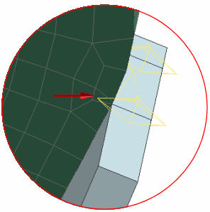
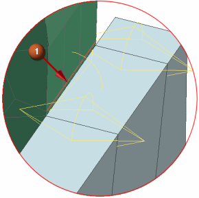
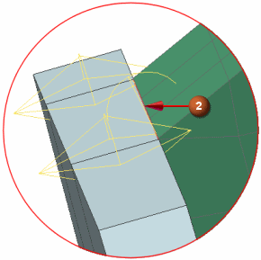
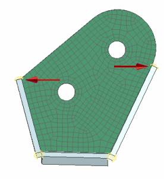

合并面
查看网格，注意到即使您选择了零个三角形选项，网格中似乎仍然含有一些三角形。

扫掠网格中的三角形单元实际上是因为在网格组件边附近的较小面，而高度扭曲的六面体单元。
|
注释 |
如果在网格拐角处没有看到三角形单元，那么您可能将网格控制放在错的边上了，移除网格和网格控制，然后重新生成网格控制和网格。 |
合并装配两侧的面，以移除边上的较小面。

 合并面(高级仿真工具条—模型清理下拉菜单)
合并面(高级仿真工具条—模型清理下拉菜单)
-



-

注意
选择已划分网格的组件边，而不是侧面的组件上的边，放大以更清楚地查看边。

-
确定
在仿真导航器中， FEM 的状态为等待更新。
-
 更新有限元模型(高级仿真工具条)
更新有限元模型(高级仿真工具条) 将会重新生成组件网格，拐角处的单元将不再显示为三角形。

-
 保存
保存